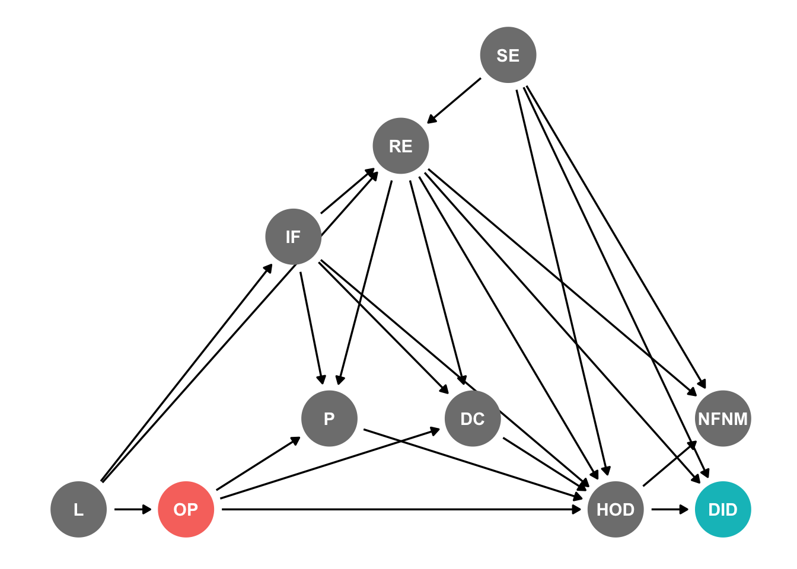
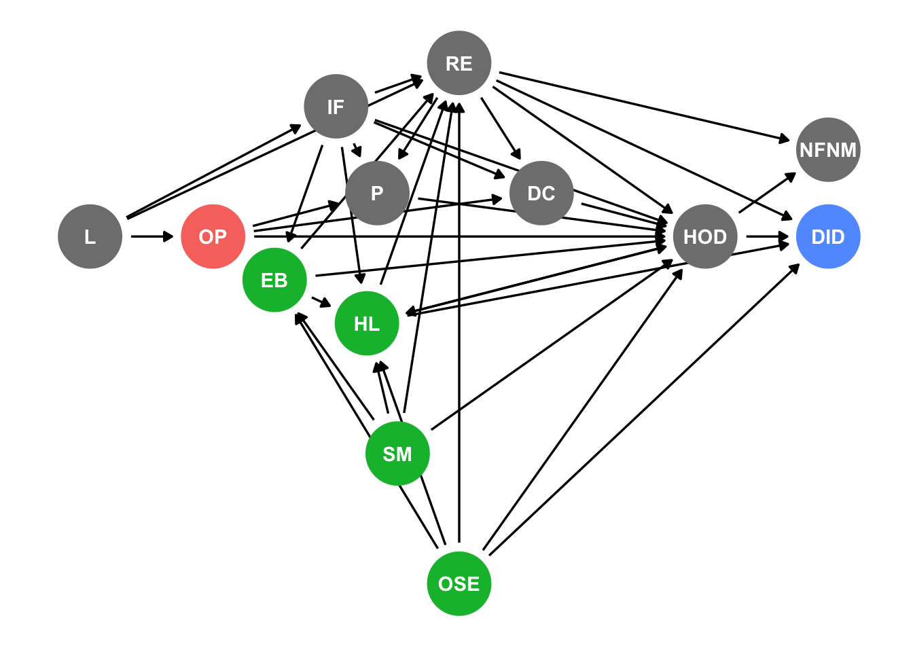

Attaching package: 'ggdag'The following object is masked from 'package:stats':
filter
Attaching package: 'ggdag'The following object is masked from 'package:stats':
filterThe opioid crisis continues to pose a significant public health challenge, with a high number of overdose fatalities. A proposed strategy to address this crisis is the legalization of illicit opioids. This paper critically reviews and evaluates the study by Shane Darke and Michael Farrell titled “Would legalizing illicit opioids reduce overdose fatalities? Implications from a natural experiment,” focusing on causal inference.
Darke and Farrell’s study explores the impact of changes in drug purity and composition on overdose rates, aiming to assess the potential effects of legalizing heroin. However, this review highlights the need for a more rigorous causal analysis.
By examining the study’s theoretical foundations, this review emphasizes the intricate causal mechanisms linking heroin legality, overdose rates, and confounding factors. It underscores the significance of considering individual and social environments, along with associated risk factors, when estimating the effects of heroin legalization on overdose fatalities.
The data used in the study primarily relies on Drug Induced Deaths (DID) and overdose cases, raising concerns about potential bias and the limited representation of the target population. Furthermore, subgroup effects are overlooked, and adequate control for confounding variables is lacking.
To address these limitations, this review suggests potential remedies, including the use of quasi-experimental methods, counterfactual scenario analysis, and the incorporation of comprehensive variables in the analysis. These approaches can enhance our understanding of the complex relationship between heroin legality and overdose fatalities, facilitating evidence-based policies to combat the opioid crisis more effectively.
In conclusion, this review underscores the importance of a robust causal analysis when investigating the potential impact of legalizing illicit opioids on overdose fatalities. By addressing the study’s limitations and proposing methodological improvements, we can deepen our comprehension of the opioid crisis and inform more effective interventions to mitigate overdose rates.
In the first part of the paper, the authors claim to check “the extent to which any change in legal access to heroin would affect overdose rates”. According to them, it is sufficient to investigate “drug purity and drug impurity as major causes of overdose” in order to falsify this claim. Before turning to the natural experiment analysis proposed by the authors in the second half of their paper, we will take a closer look to the claimed causal mechanism of the paper. For this purpose, we visualize their model in the following DAG:

| Symbol | Meaning |
|---|---|
| L | Legality |
| OP | Opioid Provision |
| RE | Risk Environment |
| SE | Social Environment |
| IF | Individual Factors |
| P | Purity |
| DC | Drug Components |
| NFNM | Non-Fatal Near Misses |
| HOD | Heroin Overdose |
| DID | Drug Induced Death |
In a paper on a related topic, Unick, et al. reviewed literature on causes for high risk of heroin overdoses. They distinguish three types of variables that should be considered and that are subsequently added in the simplified DAG developed above:
Individual Factors (IF)
Risk Environment (RE)
Social Environment (SE)
Looking at the DAGs below, it becomes clear that estimating effects of heroin legalization is an extremely complicated goal. Individual Factors, Social and Risk Environment behave as mediators, colliders and confounders. In the DAGs below, we included 15 additional variables all of which are listed by Unick et al. as well established factors for the risk of overdosing. We will discuss some of those relationships exemplary below.

| Symbol | Meaning |
|---|---|
| L | Legality |
| OP | Opioid Provision |
| RE | Risk Environment |
| SE | Social Environment |
| IF | Individual Factors |
| P | Purity |
| DC | Drug Components |
| NFNM | Non-Fatal Near Misses |
| HOD | Heroin Overdose |
| DID | Drug Induced Death |
Besides polydrug use (PDU), rapid changes in heroin tolerance is among the most common individual level causes for an overdose. Reasons for such tolerance changes incarceration (I), relapse following drug treatment (R) or infrequent heroin use (IHU). All of those variables interact with legal access to heroin and its subsequent effects. For instance, legalization eases access and therefore decreases the risk for users to experience involuntary infrequent heroin use due to unavailability on the black market. In a similar vein, legal access to heroin decreases the danger of incarceration due to acquisitive crime.

| Symbol | Meaning |
|---|---|
| L | Legality |
| OP | Opioid Provision |
| RE | Risk Environment |
| SE | Social Environment |
| IF | Individual Factors |
| P | Purity |
| DC | Drug Components |
| NFNM | Non-Fatal Near Misses |
| HOD | Heroin Overdose |
| DID | Drug Induced Death |
| PDU | Polydrug Use |
| LOE | Lack of Experience |
| I | Incarceration |
| IHU | Infrequent Heroin Use |
| R | Relapse Following Drug Treatment |
Legalization (L) has not only an effect on the risk of criminal justice risk (JCR) in the forma potentially high-risk incarceration. Limiting legal access to heroin furthermore can be linked to “higher levels of drug law enforcement (DLE) [that in turn] have been linked to increased risk of overdose deaths [16]. The hypothesized agent of action is that increased criminal justice risk (JCR) associated with drug use leads to specific behaviors, e.g. not calling for emergency help (i.e. calling 911 in the United States) following a witnessed overdose, which increase individual harm associated with drug use [17].” It becomes clear that “risk environment represents a number of structural components that moderate the relationship between individual factors and injection drug users’ (IDUs’) health” that should be considered when estimating mechanisms and effects of legalizing heroin. An additional aspect to be taken into account regards risk environment related variables such as the access to naloxone distribution (ND) or safe injection rooms (SIR) that can be mediated by legality in their effectiveness in decreasing the likelihood of heroin overdoses to be fatal.
Warning: Removed 1 rows containing missing values (`geom_dag_point()`).Warning: Removed 1 rows containing missing values (`geom_dag_text()`).
| Symbol | Meaning |
|---|---|
| L | Legality |
| OP | Opioid Provision |
| RE | Risk Environment |
| SE | Social Environment |
| IF | Individual Factors |
| P | Purity |
| DC | Drug Components |
| NFNM | Non-Fatal Near Misses |
| HOD | Heroin Overdose |
| DID | Drug Induced Death |
| DLE | Drug Law Enforcement |
| CJR | Criminal Justice Risk |
| NE | Needle Exchange |
| ND | Naloxone Distribution |
| MT | Methadone Treatment |
| SIR | Safe Injection Rooms |
The paper´s title claims to provide inside on the question whether “legalizing illicit opioids [would] reduce overdose fatalities”. This would mean to estimate the total effect a change on legality had on the number of heroin induced overdose deaths. As previously pointed out, the effect of legalizing heroin on the cases of fatal overdoses involves numerous additional factors that mediate, confound or collide the effect that need to be carefully considered when estimating the overall effect. Looking at the dags above however, it becomes clear that at least in the first part of the paper, this is not in fact the estimant explored. Instead, the authors decided to focus on what they claim to be the two most commonly assumed drivers for decreasing fatality rates, purity and drug composition. What they investigate is the indirect effect of legalizing heroin on fatal overdoses mediated by these two variables. They furthermore limit the initially stated general claim to “provision in the manner of substances such as alcohol, where use is by the individual in a setting of their choosing [20]. Known dose and purity do not protect and any such provision, we argue, would not reduce overdose rates”. They thereby exclude any model that includes institutional settings like supervised consumption rooms. Combining these limitations, the study therefore examines the potential impact of legalization, without additional framework measures, on changes in the purity and adulterant levels, and how these changes would affect the immediate mortality rate due to overdose. Contrary to the authors’ claim, the research does not focus on the overall effect of legalizing heroin on the number of fatal overdoses.
Previously, the assumed mechanisms, estimants and theoretical foundations have been reviewed. One of the main insights of this discussion was the much more limited estimant than suggested by the paper´s title. While we furthermore pointed out a number of problematic simplifications, in the subsequent section we would like to turn to a different aspect of the article in question. Even if we were to accept the theoretical premises discussed above, the data the authors based the estimation of these effects deserves attention. For the first part of the paper, the researchers quote from a number of different sources. As many of the data analyses their conclusions are based on are not within our reach, reviewing the quality of this research is hard to evaluate. A common feature of these sources, however, seems to be the predominant focus on cases of Drug Induced Deaths and cases of overdoses. Focusing only on those cases means to exclusively consider cases that, in the simplified DAGs above, have one specific value in the binary variables Heroin Overdose (HOD) and Drug Induced Death (DID). Estimating the (total, direct, or indirect) effect of legalizing heroin, however, would define the population as the population of heroin addicts. Using a data base that primarily or exclusively contains HOD or DID cases is likely to result in a sample that does not represent this target population.
Another issue might arise when comparing different subgroups of heroin users. When the different variables discussed interact with the effect of legalization in the way described above, it becomes impossible to precisely estimate the effect strength of the targeted estimant. This becomes clear when the authors aim to discuss, for instance, the effect of different levels of heroin purity on the tolerance of heroin users after periods of opioid abstinence in comparison to heroin users without abstinence. If subgroups are not considered for controlling, effect estimates might be screwed. As seen above, abstinence and its effect on tolerance are entangled in a complex way with several individual risk factors, as well as the risk and social environment. The authors indeed acknowledge this limitation when they state that there “are situations in which tolerance plays a more significant role, specifically after periods of opioid abstinence, such as the period immediately following imprisonment release or detoxification.” As they do not control for such variables in their limited model however, their data analysis seems to be not sufficiently fine-grained to estimate the difference of effect strength; and they are limited to the statement that “such cases constitute a small minority, and it is questionable in the absence of opioid tolerance whether or not variations in purity are of relevance, as the risk of death is so high.”
The issue becomes even more complicated, since being a member of a socially excluded group (OSE) means being at higher risk of an overdose, but also increases the fear of Drug Law Enforcement (DLE) as well as the criminal justice risk (JSR) and subsequent incarceration. In turn, this means that the effect of legalization can be expected to be mediated by all those variables: the change in behavior might be different for socially excluded groups as legalization has a different effect on their criminal justice risk. Additionally, their risk of sudden decreases in tolerance after incarceration could be expected to change their risk of a fatal overdose to a different extent than subgroups that are less affected by these risk factors in the first place. The point is that, in addition to the their simplified DAG, there are subsequent problematic implications for the data referenced in the article, as it becomes unclear to what extent the data at the researchers´ hand is fitted to control for such distinct subgroup effects.
In addition to their discussion of purity and drug composition of heroin in the first section, the authors furthermore suggest to consider the opioid crisis in the US as a natural experiment to estimate the effects of legalizing heroin on the number of fatal overdoses. According to the researchers, legal opioids could be considered as real-world examples of widespread licit opioid provision in order to investigate how legal heroin distribution would play out. Their approach, however, seems to be mostly rely on the assumption that “the toxicological profile of these deaths [fatal overdoses caused by licit opioids] is consistent with that of heroin”. Such a direct comparison of the overall effect across all groups as it seems to be implied here for users of licit and illicit opioids would only make sense if the user groups of both types of substances would equally composed. As soon as one assumes different user groups for legal pain killers and heroin, transferring assumptions about effect strength and type from one setting to the other would require knowledge about the relationships of the variables within the respective DAGs.
The authors are not completely clear about the methodological considerations behind their comparisons. But it seems reasonable to assume that the user group of heroin and licit opiods are not identical in terms of the overdose risk factors outlined in the DAGs above. While the researchers claim comparability between one group of typical users with high risks of fatal licit opioid overdoses and typical heroin fatalities, the common trade they point out is “the concomitant use of other CNS depressants”. Without further investigation of the numerous additional interaction variables, such claims have to be treated with caution. These suspicions are further strengthened by the authors´ description of the second group of common fatal overdose users, namely an older group of chronic pain patients; this group can be expected to be distinct from the typical overdose heroin user. Taking these two objections together, it becomes once again clear that comparing the two populations of opioid users is hardly justifiable without further controlling for additional variables.
In addition to these concerns regarding the theoretical backing and population composition, one has to carefully consider the sample composition for the natural experiment. Similar like in the paper´s first section, it seems like the researchers primarily sample data from (fatal) overdoses. Thus, they only take into account cases that have a specific value for the respective binary variables. Thus, the sample at their hands is not representative of all licit opioid users but strongly biased towards users with (fatal) overdoses.
Lastly, it is worth noting that the claimed natural experiment setting does not take into account what triggers the increase in numbers. Those opioids in question were legally available before there increased use, that legality is not the (only) variable that changed in the DAG. Instead, the authors state that as “prescription rates have increased, however, poisonings have increased dramatically”. This puts a different focus on the crucial factors then a binary legislation variable as suggested in the paper´s title. The idea behind the natural experiment seemed to have been to simulate a counter-factual situation where a change in legalization from illegal to legal would change overdose numbers. Again, this would make it all the more crucial to ensure that all relevant variables are included in the assumed DAG in order to ensure both identification of crucial factors and transferability between subgroups.
The paper fundamentally challenges two prevalent assumptions that underlie our understanding of opioid overdose, which are that illicit drug purity variations and drug contaminants significantly contribute to overdoses. In attempting to critique these beliefs, the authors explore existing demographic, toxicological, and epidemiological data related to heroin overdoses.
Their approach leans heavily on Drug Induced Deaths (DID) and overdoses, which may not fully represent the target population and potentially lead to biased estimates by overlooking diverse drug usage patterns and risks. However, their strategy of using the prescription opioid epidemic as a natural experiment to observe the correlation between increased access to legal opioids and overdose rates provides intriguing insights, challenging prevalent assumptions.
However, the comparison made between prescription opioids and heroin is potentially flawed. While the authors argue that known dose and purity do not protect users from overdoses, they fail to convincingly transfer these findings from prescription opioids to the context of heroin use, which is often characterized by different user profiles and usage patterns.
Despite the compelling use of the opioid epidemic as a natural experiment, the analysis doesn’t fully consider potential confounders, colliders, or mediators. For instance, socio-economic factors could influence both drug usage patterns and access to treatment, thus confounding the relationship between opioid legality and overdose rates. Polydrug use is another potential confounder that isn’t adequately addressed. Simultaneous use of CNS depressants, such as alcohol and benzodiazepines, along with opioids, could significantly impact overdose rates.
Moreover, there is insufficient analysis of the complex relationships between various risk factors, such as individual and social environment factors, which influence tolerance and thus, the effect of drug purity on overdose risk.
Specific socio-economic factors, such as employment status, educational attainment, and housing stability, could be crucial confounders. For instance, individuals with lower educational levels and unstable housing are known to have higher rates of drug usage and may also have less access to addiction treatment services. On the other hand, those employed might have a lower propensity for drug use but might also face more stigmatization, hindering their access to treatment. Hence, controlling for these socio-economic factors is vital to understand the true relationship between opioid legality and overdose rates.
The social environment, including factors such as social support networks, stigma associated with drug use, and availability of harm reduction services, may significantly influence drug use patterns and risk of overdose. Additionally, individual factors like genetic predisposition, mental health status, and previous experiences with drug use and overdoses could also modulate the relationship between opioid use and overdoses. These risk factors intertwine to create a complex web of causality that cannot be overlooked when analyzing the potential impact of legalizing illicit opioids on overdose fatalities.
The paper predominantly relies on observational data from the natural experiment, which inherently lacks the randomization found in experimental studies. While the natural experiment provides valuable insights, the non-random nature of the observed data could expose the results to potential bias or confounding factors.
A significant limitation in the study is the lack of a clear counterfactual scenario. In other words, it’s not explicit what would have happened to overdose rates if the prescription opioid epidemic hadn’t occurred. In other words, it’s not explicit what would have happened to overdose rates if the prescription opioid epidemic hadn’t occurred. Such a counterfactual analysis is vital for attributing causality in the context of natural experiments.
The authors make a leap in extrapolating from the effects of legalized pharmaceutical opioids to those of legalized heroin. However, the transferability of effects between these two opioids is not sufficiently substantiated, potentially leading to faulty conclusions. However, the transferability of effects between these two opioids is not sufficiently substantiated, potentially leading to faulty conclusions. Also, they propose to provide injectable heroin in treatment settings as a solution, which contradicts their original premise of treating all opioids similarly for their natural experiment.
To strengthen their analysis, the authors could employ quasi-experimental methods. One such method is a difference-in-differences (DiD) approach, which compares the change in outcomes over time between a group that experienced an intervention (or policy change) and a group that did not. For instance, this approach could analyze the variation in overdose rates across states with different opioid prescription policies over time. Additionally, using instrumental variable methods could help deal with unobserved confounding variables. Alternative data sources, such as surveys or patient records, could also help offer a more representative sample of the opioid user population.
A detailed counterfactual scenario analysis could enrich the study. One example might involve using data from jurisdictions like Portugal, where drug use has been decriminalized. By comparing overdose rates before and after this policy change and adjusting for other relevant factors, the authors could model the potential impact of similar policies in other contexts. Another counterfactual could involve synthesizing a control group via methods like propensity score matching, simulating a parallel universe in which opioid policy remained unchanged.
Future research should embrace a multi-dimensional approach, including variables like healthcare access, drug potency, polydrug use prevalence, and socio-economic factors, in addition to the legal status of heroin. Such an approach, enhanced with causal models like Directed Acyclic Graphs (DAGs), will offer a more holistic understanding of heroin use and associated risks. In tandem, sensitivity analysis ought to be conducted to scrutinize the impact of confounding variables, thereby assessing the robustness of the findings. Moreover, proposed interventions, such as providing injectable heroin in treatment settings, must be rigorously tested for effectiveness, considering potential adverse reactions, and logistical and ethical implications.
In conclusion, the study by Shane Darke and Michael Farrell, titled “Would legalizing illicit opioids reduce overdose fatalities? Implications from a natural experiment,” provides valuable insights into the complex relationship between heroin legality and overdose rates. However, this review highlights several areas that require further attention to strengthen the study’s findings and implications.
The analysis emphasizes the limited estimant explored in the paper, focusing primarily on the indirect effects of heroin legalization mediated by purity and drug composition. The research findings suggest that changes in these variables, without additional framework measures like institutional settings, may not effectively reduce overdose rates. However, it is important to note that the study’s focus is not on the overall effect of legalizing heroin on the total number of fatal overdoses.
Critically examining the data sources used, the review raises concerns about the representativeness of the sample, which primarily includes cases of Drug Induced Deaths (DID) and overdoses. This limitation implies that the sample may not accurately reflect the target population of heroin users, potentially introducing bias in the conclusions drawn.
While the authors propose the opioid crisis in the US as a natural experiment, caution is warranted in comparing the effects of legal pharmaceutical opioids with those of legalized heroin. The transferability of findings between these two substances is not adequately supported, given the potential differences in user profiles, usage patterns, and associated risk factors.
To strengthen the analysis, future research could employ quasi-experimental methods, control for confounding variables, and conduct counterfactual scenario analyses. Additionally, incorporating more comprehensive data, considering multiple dimensions of the opioid crisis, and utilizing causal models like Directed Acyclic Graphs (DAGs) would enhance our understanding of the complex interplay between heroin legality and overdose fatalities.
While the paper contributes valuable insights, further research is needed to address the identified limitations and refine our understanding of the implications of legalizing illicit opioids on reducing overdose fatalities. These endeavors will guide evidence-based policies and interventions to effectively combat the ongoing opioid crisis.
Social Causes
Lastly, social causes need to be taken into account, as they might very well change the way the factors indicated above affect overdose and fatality risks. Being affected by poverty (EB), homelessness (HL) and other forms of social exclusion (OSE) - all listed as risk factors for drug overdose - can reinforce each other. In addition, they interact with risk environment related factors (RE) such as increased criminal justice risk or the related individual factor (IF) incarceration. In a similar vein, members of the indicated social groups are at higher risk of involuntary infrequent heroin access. All social causes indicated play a role as mediators, colliders, and/or confounders in the way legalization (L) would affect fatal overdose cases (DID).
